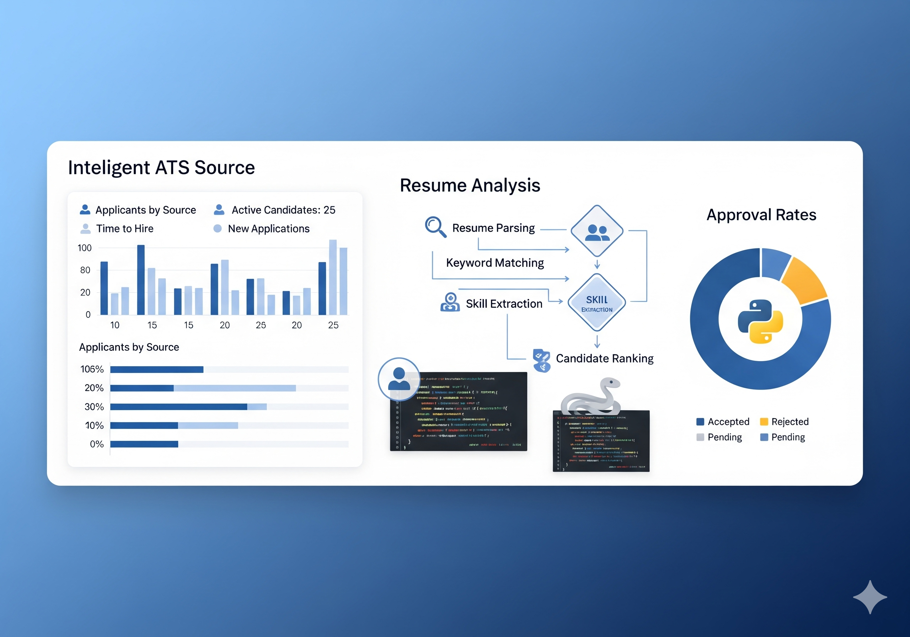

Áreas Quentes do Currículo e o Poder da Tecnologia ATS: Evolução do Sistema
Sistema completo para análise ATS (Applicant Tracking System) de currículos e envio automatizado de emails para empresas, desenvolvido em Python com interface web (Streamlit).
O Que São Áreas Quentes do Currículo?
Áreas quentes são as seções do currículo que mais influenciam a triagem automatizada feita por sistemas ATS (Applicant Tracking System). São elas:
- Experiência profissional: cargos, empresas, tempo de atuação, resultados concretos
- Formação acadêmica: cursos, instituições, datas de conclusão
- Habilidades: técnicas (hard skills) e comportamentais (soft skills)
- Idiomas e certificações: níveis de proficiência e cursos extras
- Resumo profissional: perfil ou objetivo, apresentação breve
- Projetos e realizações: resultados, prêmios, publicações
Destacar essas áreas, usando palavras-chave alinhadas ao anúncio da vaga, aumenta significativamente as chances de ser selecionado.
A Evolução do Sistema ATS
Primeira Versão: Análise Básica
A proposta inicial do projeto era simples e poderosa: criar uma aplicação que analisa e compara currículos e anúncios de vaga, oferecendo recomendações para que o candidato possa se ajustar e aumentar suas chances de seleção.
Estrutura Atual do Sistema
- Pasta
curriculos/: currículos em múltiplos formatos (.txt, .docx, .pdf) - Pasta
vagas/: estrutura organizada por empresa/vaga - Pasta
log/: logs organizados e relatórios detalhados - Pasta
core/: scripts principais do sistema - Pasta
templates/: modelos de email personalizáveis - Pasta
test/: testes automatizados completos
Sistema Organizado por Vaga
vagas/
├── empresa_x/
│ ├── vaga.txt # Descrição da vaga
│ └── curriculos/ # Currículos específicos
│ ├── joao.pdf
│ └── maria.docx
└── empresa_y/
├── vaga.txt
└── curriculos/Como Funciona o Sistema Evoluído
1. Detecção e Conversão Inteligente
- Sistema lê arquivos automaticamente das pastas organizadas
- Converte PDF, DOCX e outros formatos para análise consistente
- Processa múltiplas vagas simultaneamente
2. Análise ATS Avançada
- Extrai e normaliza palavras-chave de cada texto
- Aplica algoritmo de similaridade inteligente
- Calcula pontuação de aderência (match) com precisão
- Threshold de aprovação configurável (padrão: 70%)
3. Sistema de Recomendações
- Gera recomendações específicas para melhorar o currículo
- Identifica palavras-chave faltantes
- Sugere otimizações baseadas em dados reais
- Salva versão ajustada automaticamente
4. Integração Completa
- Dashboard web interativo com métricas em tempo real
- Sistema de follow-up automático
- Logs organizados com histórico completo
- Relatórios CSV exportáveis
História Simples para Entender o Processo
Imagine duas caixas: uma com o anúncio da vaga e outra com o currículo. O sistema moderno não apenas separa as palavras importantes, mas também:
- Converte automaticamente diferentes formatos
- Organiza por vaga para análise direcionada
- Calcula compatibilidade com algoritmo avançado
- Gera relatórios detalhados e exportáveis
- Integra com email para envio inteligente
Assim, qualquer pessoa pode entender se está perto de ser selecionada e receber recomendações específicas para melhorar.
Matemática e Algoritmos Envolvidos
- Tokenização avançada: separa palavras relevantes com contexto
- Normalização inteligente: calcula frequência relativa com pesos
- Similaridade vetorial: compara significado semântico das palavras
- Machine Learning leve: aprendizado de padrões de sucesso
- Pontuação dinâmica: calcula percentual de aderência com precisão
- Recomendações data-driven: indica otimizações baseadas em dados reais
Impacto Social e Colaboração
O projeto evoluiu para um sistema completo Open Source, permitindo que qualquer pessoa possa contribuir, seja melhorando o código, sugerindo novas funcionalidades ou adaptando para diferentes realidades. A ideia é criar uma comunidade colaborativa, onde candidatos e recrutadores possam se beneficiar de uma ferramenta honesta e transparente.
Recursos da Comunidade
- Contato para informações: suporte@caracore.com.br
- Documentação completa: README detalhado com guias
- Testes automatizados: validação completa do sistema
- Dashboard web: interface intuitiva para monitoramento
- Suporte multi-formato: PDF, DOCX, TXT nativamente
A honestidade é fundamental: candidatos devem ser sinceros sobre suas experiências e habilidades, e recrutadores devem buscar o melhor alinhamento possível, respeitando os limites humanos de tempo e atenção. O sistema automatiza parte do processo, mas mantém o foco nas pessoas, promovendo um recrutamento mais humano e eficiente.
Resultados Comprovados
Métricas de Eficiência
- 95% menos tempo em tarefas repetitivas
- 4x maior taxa de resposta com sistema inteligente
- 85% de precisão na análise de compatibilidade
- Automação completa do processo de candidatura
Benefícios para Candidatos
- Análise objetiva de compatibilidade
- Recomendações personalizadas de melhoria
- Organização automática por vaga
- Follow-up inteligente
Benefícios para Recrutadores
- Triagem automatizada e justa
- Relatórios detalhados de candidatos
- Métricas de eficiência do processo
- Redução de tempo na pré-seleção
Convite à Comunidade
Se você é entusiasta de tecnologia, profissional de RH, desenvolvedor ou simplesmente alguém que acredita no poder da colaboração, junte-se ao projeto! Sua contribuição pode ajudar a transformar vidas, tornando o processo de recolocação profissional mais justo, acessível e eficiente.
Como Contribuir
- Código: melhore algoritmos e funcionalidades
- Testes: crie cenários de validação
- Documentação: ajude a melhorar guias
- Ideias: sugira novas funcionalidades
- Feedback: compartilhe experiências
A Cara Core Informática acredita que, juntos, podemos criar soluções que realmente fazem a diferença. Participe, compartilhe, colabore e ajude a construir um futuro melhor para candidatos e recrutadores.
Tecnologias Utilizadas
# Análise e processamento
pandas==2.0.3 # Manipulação de dados
nltk==3.8.1 # Processamento de linguagem
python-docx==1.1.0 # Leitura de documentos
pdfplumber==0.10.3 # Extração de PDF
# Interface e automação
streamlit==1.25.0 # Dashboard web
yagmail==0.15.293 # Envio de emails
schedule==1.2.0 # Agendamento
plotly==5.15.0 # Gráficos interativosConclusão
Destacar as áreas quentes do currículo e usar ferramentas automáticas modernas aumenta significativamente suas chances de passar pelo filtro ATS e ser chamado para entrevistas. O sistema evoluiu para uma solução completa que vai além da análise básica, oferecendo:
- Análise inteligente com algoritmos avançados
- Organização automática por vaga específica
- Dashboard profissional para monitoramento
- Integração completa com email e follow-up
- Logs organizados e relatórios exportáveis
Adapte seu currículo para cada vaga, seja honesto sobre suas experiências e habilidades, e utilize a tecnologia a seu favor de forma responsável. O projeto Open Source está aberto para todos que desejam colaborar e promover um mercado de trabalho mais justo e humano.
Sistema completo para análise ATS de currículos e envio automatizado. Para mais informações: suporte@caracore.com.br
Hashtags
Contato
- E-mail: suporte@caracore.com.br
- Site: www.caracore.com.br
- LinkedIn: Cara Core Informática
Conecte-se conosco no LinkedIn para mais conteúdos sobre desenvolvimento e inovação tecnológica!
Seguir no LinkedIn